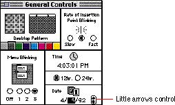
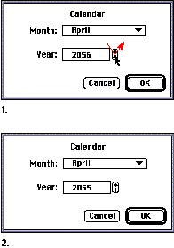

|
Little ArrowsThe control that is two arrows pointing in opposite directions is commonly called little arrows. It is used to increase or decrease values in a series. Figure 7-16 shows one example of the little arrows control.Figure 7-16 Little arrows control  The little arrows control has a label that specifies the content to which it relates. The numerical or textual value appears in a box, which is often a type-in box so the user can type in a value instead of using the little arrows. When the user clicks one arrow, the value changes by a unit of 1. If the user presses the arrow, the value increases or decreases until the user releases the mouse button. While the user clicks or presses the arrow, it is highlighted to provide feedback to the user. The unit of change depends on the content. For example, if the content area displays years, the increment is one year at a time, as shown in Figure 7-17. Figure 7-17 Content-dependent increment  If possible, give some indication what the user can expect by using the up arrow and the down arrow. For example, in Figure 7-17 it may not be obvious which direction the year would increment using either arrow. Clicking the up arrow might change the year from 2055 to 2056 or 2055 to 2054. The little arrows control works best with numbers in cases in which it's obvious that the up arrow means 1 more than the current value and the down arrow means 1 less than the current value. |